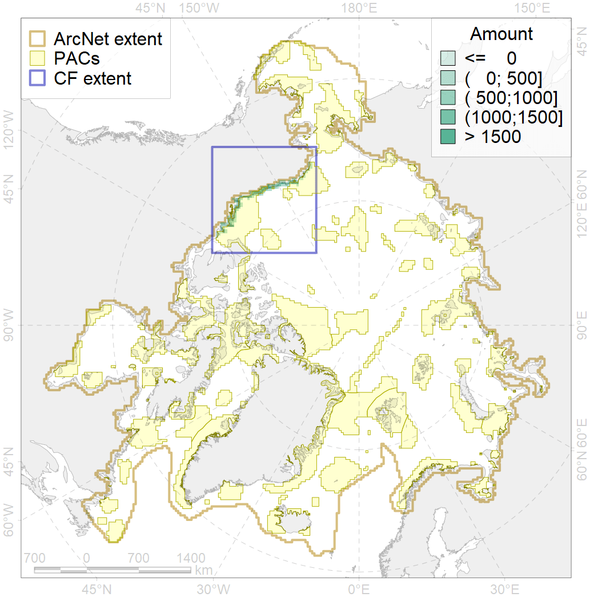
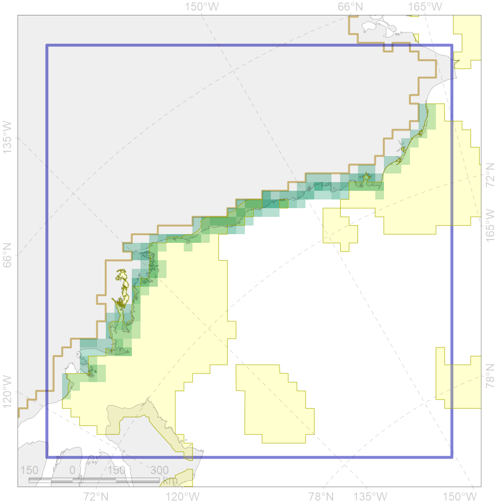

9034

| CF code | 9034 |
| CF name | polar bear denning areas of SB (Southern Beaufort Sea) subpopulation |
| Time Period | prior to 2018 |
| Source(s) | WWF Interim Report - Polar Bear Denning – 2018; Polar bear critical habitat USFWS, 2010; Smith et al., 2017 |
| Seasonality | Oct-Apr |
| Depth Horizon | 0 |
| Methodology | Field data, expert opinion, simulation results. |
| Use Restrictions | Could be used for the project |
| Author Name | Evgeniya Melikhova, Stanislav Belikov |
| Notes | |
| Scenario’s Target | 0.648 |
| Target Achievement | 0.651 (Scenario: 100.4%) |
| PAC | Share of the Total Amount within the PAC | Share of the Target Achievement for the ArcNet | PAC’s Contribution to the Target Achievement |
|---|---|---|---|
| 60 | 6.9%9.7% | 8.3%9.1% | 8.2%9.1% |
| 61 | 1.6% | 2.5% | 2.5% |
| 62 | 51.1%57.7% | 75.1%82.7% | 74.8%82.4% |
| inner | 59.5%69.0% | 85.9%94.3% | 85.5%93.9% |
| outer | 40.5%71.8% | 14.5%60.2% | 14.5%60.0% |
| † supplement values are for area consistence whereas principal values are for Accenter compatible gridded stats |